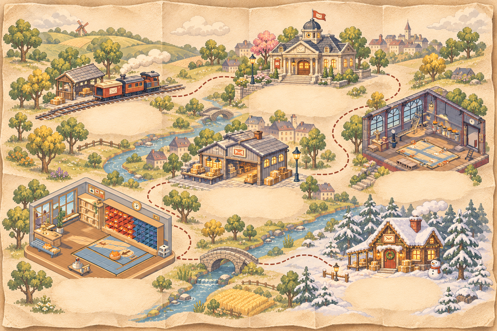
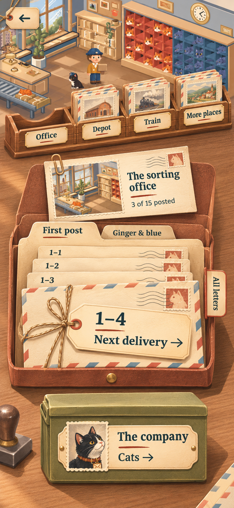
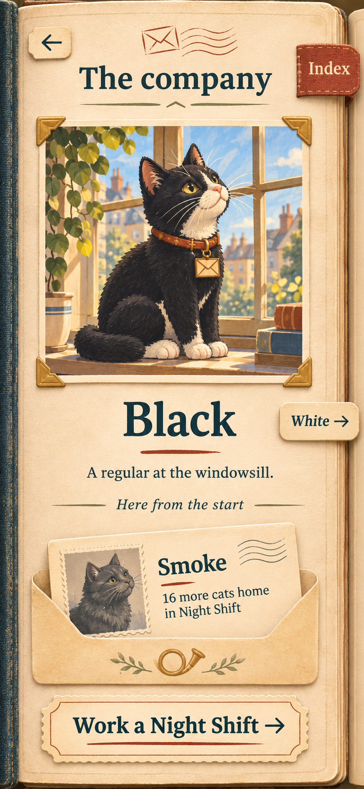

The route &
the company
Places to explore. Letters to open. Familiar faces.
A world to explore
Drag the map, open a place, find your way home.

Drag or scroll to explore
A navigation study with mock progress. Map illustration is concept art; office and depot postcards use the game’s room images.
Six places, a hundred deliveries
The map shows places. A place opens its chapter packets; each packet holds its letters. More levels make the packet deeper, rather than covering the countryside in dots.
A home, without snapping back
Opening the journey starts at your current place. After that, it stays where you leave it. Close a packet or the cat album and you return to the same view. Current place brings you back deliberately.
Browse freely, travel directly
One finger pans; mouse users drag or scroll. The place index reaches every destination without a search. Zoom is optional. The next letter stays within reach while you look around.
What grows on a bigger screen?
The same map reveals more geography. The current letter stays in a fixed, reachable position. Opening a place gives the postcard and letters a facing spread on iPad or Mac; a phone shows one readable column.
There is no automatic return-to-centre after a timeout. Resizing keeps the part of the map you were looking at.
Give each object its own job
The same journey, kept on a sorting desk instead of a map.

The rack selects a place
Choose Office, Depot or another destination. Its packet comes out onto the desk; its slot stays empty until you put it back. The rack always holds story correspondence.
The open packet selects a delivery
The postcard tells you where you are. Chapter folders divide the work. Delivered letters sit behind the ready letter; All letters gives a direct, readable index for replays or a long chapter.
The cat file holds cats
It is a separate object with its own portrait cards. Opening it puts away the delivery packet and brings a cat forward. Returning to deliveries restores the packet you had open. Nothing changes from a level into a cat.
This fixes the box’s logic, but it asks the player to learn more objects. I still favour the map: the world is a stronger invitation, and the letter remains the quickest way to play.
Opening, closing and the wider desk
Phone: focus moves to one opened object. The back action restores the wider desk; it does not launch another menu over it.
Tablet and Mac: the rack and closed cat file can remain at the edges of the working space. Selecting a letter brings that letter forward. Navigation never depends on dragging tiny paper edges.
The cat-file tap below shows the shared portrait content in album form for comparison. Its card-file opening still needs its own visual pass.
Yes: option 1 becomes the cats’ book
The portrait leaves belong here. The map keeps the journey.


A quieter version of the first idea
A portrait, a name and a small observation. No place progress mixed into the leaf. Night Shift’s next arrival sits in a pocket as an invitation.
A direct index, not endless leafing
Turn a leaf for the pleasure of browsing, or choose a named cat directly. Phone shows one leaf. iPad can show a facing pair. The book opens at the cat you last visited.
The same company, two bindings
From the map, this is a bound album. From the desk, these portraits would be cards pulled from the separate file. Their arrival conditions and Night Shift progress are the same.
The map plus this companion book is the most coherent combination for me. It gives the journey room and gives each cat its own moment.